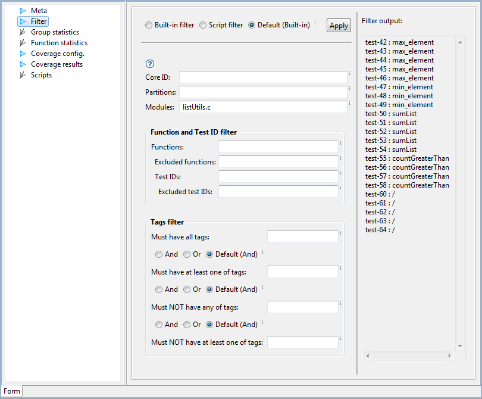

Filter
Filter settings define which test cases are members of a group.
Test cases can be removed or added to group only with filter
settings. After change in settings, command must
be executed to update test cases in groups.
Group filter has many settings and it can specify complex criteria
for test case filtering. However, in most cases only one or two
items need to be set, like it is done in the image below, where
all test cases for functions in module listUtils.c are listed.
Use tool-tips of controls in filter section
to learn more about their meaning.

Please note that only executable tests (have Execute flag in
section Meta selected) can be members of a group.
Limitation: Download files with the same name but in different
directories are not supported.
Drag and drop
Drag & Drop action of a test case on group adds test ID of
the dropped test cases to filter. This action is convenient for
defining filter in a new custom group, which has no other items
set. Only test cases dropped on a group will be group members.
If filter has already other constraints defined, Drag & drop may
not add test cases to the group. For example, if filter is
configured to contain only test cases for functions from module
signal.c, and test case from module math.c is dropped on the
group, then this test case will not be part of the
group. Furthermore, since there is no test case with the given ID
for functions from module math.c, the group will contain no test
cases. Modify the filter manually in such cases.